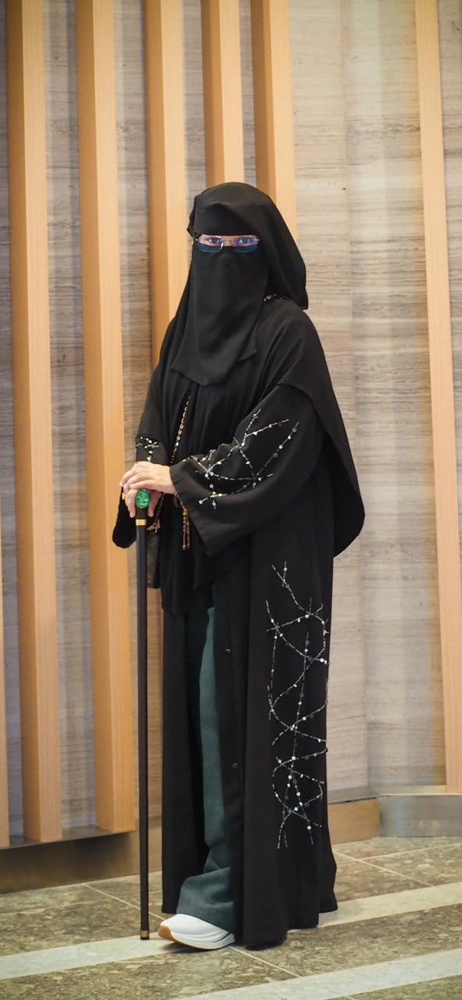
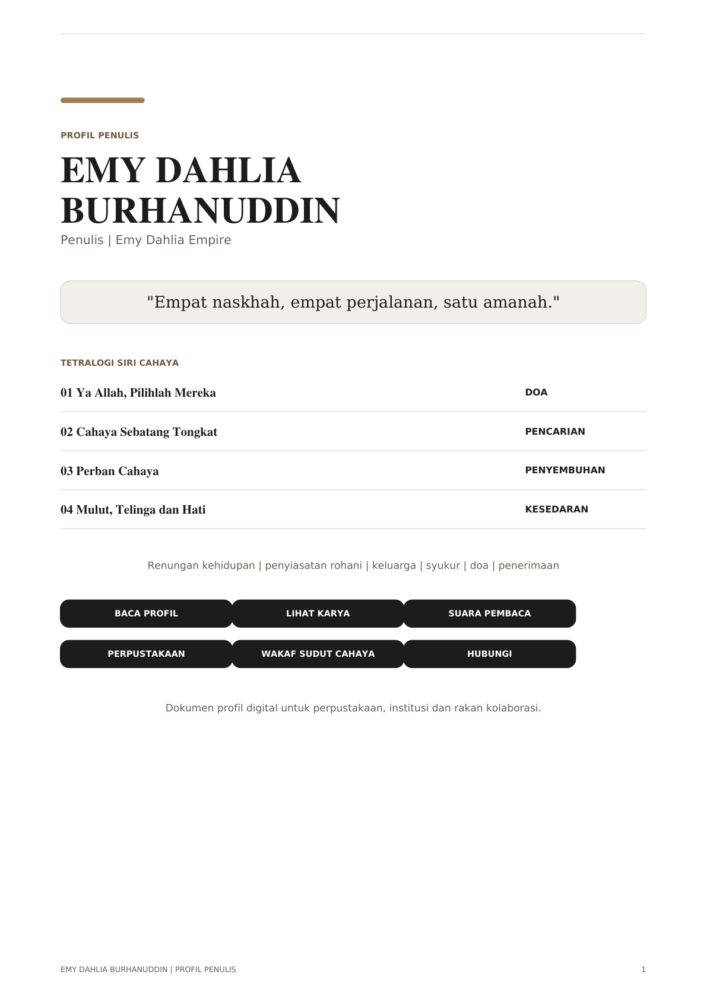

Tentang Emy Dahlia
Menulis daripada hidup, untuk menyentuh hati.
Kenali perjalanan penulisan Emy Dahlia Burhanuddin dan karya-karya Siri Cahaya.

Kisah saya
Setiap pengalaman membawa makna.
Penulisan Emy Dahlia lahir daripada pengalaman hidup, renungan dan perjalanan iman.
Baca Kisah SayaProfil rasmi
Dokumen rujukan penulis.
Profil rasmi menghimpunkan pengenalan penulis, empat karya Siri Cahaya, suara pembaca dan inisiatif Wakaf Sudut Cahaya. Dokumen ini kekal dalam Bahasa Melayu.
